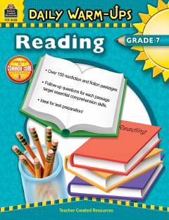

DW7-sinf o'quvchilari uchun o'qish ko'nikmalarini oshiruvchi qisqa matnlar va mashqlar to'plami.
Ushbu kitob 7-sinf o'quvchilari uchun mo'ljallangan o'qish ko'nikmalarini rivojlantiruvchi qisqa matnlar to'plamidir. Unda hayvonot dunyosi, biografiyalar, tarix, fan va zamonaviy voqealarga oid turli xil badiiy va ilmiy-ommabop matnlar jamlangan.